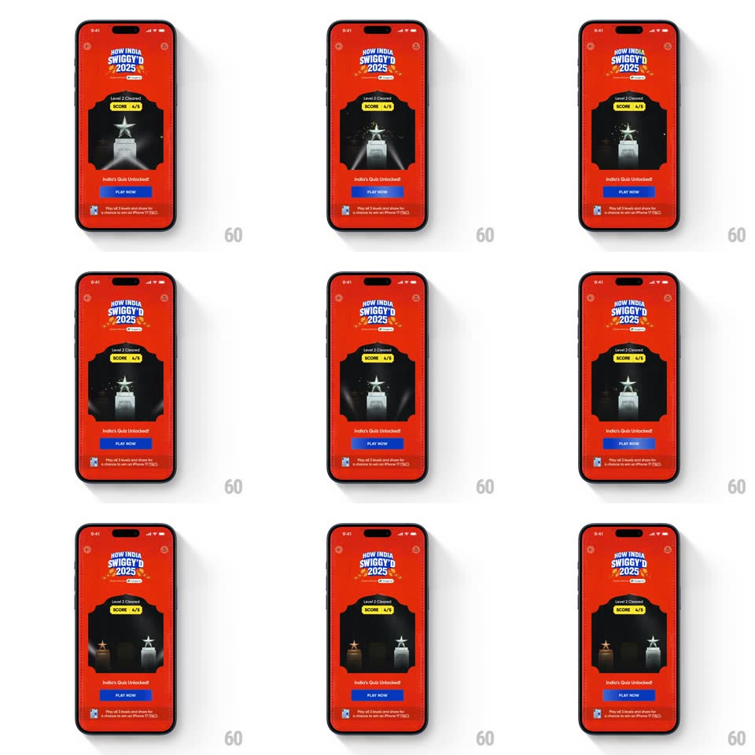

Media
Frame-by-frame

Rebuild this animation 1:1: Swiggy's "How India Swiggy'd 2025" Level 2 celebration - a silver star trophy rotates in 3D inside its dark alcove while particles drift, unlocking "India's Quiz".

Rebuild this animation 1:1: Swiggy's "How India Swiggy'd 2025" Level 2 celebration - a silver star trophy rotates in 3D inside its dark alcove while particles drift, unlocking "India's Quiz". ## Integration Integration: stack-agnostic spec - springs given as stiffness/damping, timed motions as duration + curve; map every value to your framework and animation library of choice. ## Scene Swiggy red screen: the "HOW INDIA SWIGGY'D 2025" badge, "Level 2 Cleared!" with a lime "SCORE 4/5" pill, a dark alcove holding a silver star-topped trophy, drifting light particles behind it, the "India's Quiz Unlocked!" line, a blue PLAY NOW button, and the iPhone-prize footnote. ## Motion spec Pattern: rotating 3D trophy reveal with drifting particles. - The alcove fades in (300ms) with "Level 2 Cleared!" and the SCORE pill popping (scale 0.8 -> 1.05 -> 1, spring ~400/14). - The trophy drops in from above (translateY -40 -> 0, spring ~340/14, ~500ms) with a light burst behind it (radial flash, 300ms). - The trophy then rotates continuously on its vertical axis - a slow 3D spin (6s per full turn) with specular highlights sweeping its faces as it turns. - Small particles (dust/spark points) drift upward through the alcove the whole time (rising ~100px over 3s, fading, staggered loop). - The star at the trophy's peak flares every ~3s (star glint, scale 0 -> 1 -> 0, 300ms). - "India's Quiz Unlocked!" fades up (250ms), PLAY NOW rises and fills blue (250ms), footnote last. ## Calibration - The spin is a true turntable - the trophy shows its profile and back, not a flat wobble. - Particles stay behind the trophy layer - they never cross in front of it. ## Reduced motion Static trophy with a single sparkle (300ms); no particles or rotation. ## Don't miss - Level 2's trophy is silver/white - distinct from Level 1's gold; the metal tier maps to the level. - The lime SCORE pill is the same component as Level 1's - identical placement above the trophy.